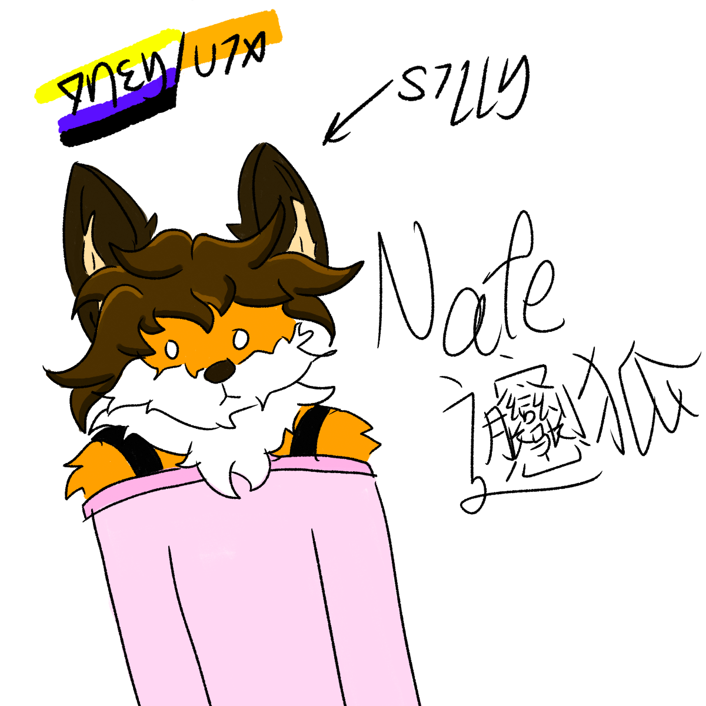

About Me
Font
Contact
ArtDump
About Me
Font
Contact
ArtDump

Nate. If you're family then why are you on my website and how did you find it?
Pronouns: they/vix/she/it
they/vix/it are preferred and she is only if you're close and I allow it.
Plutonium is the 94th element of the periodic table, its main isotope has 145 neutrons and is not normally found in nature. Instead, the formation of plutonium occurs in intentionally breeding via U-238, or the waste product of nuclear reactors when using up the fuel rod. The neutron capture process turns the U-238, non fissile isotope into Pu-239, which uses a neutron to transmute the Uranium into plutonium. It is a severely radioactive element and was used in the manufacturing of atom bombs. It has a short half life, where it decays back into Lead-207 via radioactive decay.